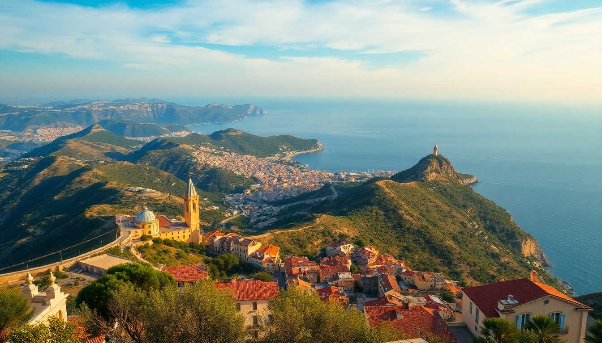

Best Day Trips from Nice: Monaco, Cannes & Antibes

I based myself in Nice for a week and used the TER train to hit Monaco, Cannes, and Antibes on separate days. Each place feels completely different, and the train makes them easy. Here’s what I actually did, what I’d skip, and where I’d go back.
How do you get from Nice to Monaco, Cannes, and Antibes?
The TER train is the only way to do these trips well. It runs along the coast from Cannes through Antibes and Nice all the way to Monaco and beyond. I bought tickets at the station each morning—no need to book ahead. A single ride from Nice to Monaco costs about €4, and the trip takes 25 minutes. To Cannes, it’s 30 minutes and roughly the same price. Antibes is only 15 minutes from Nice.
Driving is a nightmare in summer. Parking in Monaco costs €30 an hour near the port. The train drops you right in the center of each town. I also used the Monaco bus system (line 1 or 2) to get up to the palace from the train station—cheap and frequent.
Is Monaco worth a full day?
Yes, but only if you go in with realistic expectations. Monaco is small, expensive, and feels like a theme park for wealth. I spent about five hours there and saw everything I wanted.
Start at the Monaco-Ville old town on the rock. Walk up to the Prince’s Palace (the changing of the guard is at 11:55 AM—arrive early to get a spot). From there, head down to Port Hercules to see the yachts. I skipped the Casino de Monte-Carlo interior because the entry fee is €17 and it’s crowded with tourists taking selfies. The gardens outside are free and nicer.
- Train station: Monaco-Monte-Carlo station, then exit toward “Monte-Carlo” or “Monaco-Ville” depending on your plan
- Lunch spot: U Cavagnetu in Monaco-Ville—small, local, and serves a good socca (chickpea pancake) for €8
- Best view: Jardin Exotique—€7 entry, but you see the entire principality
- Skip: Casino interior—overpriced and stuffy
Should you spend a day in Cannes or just walk the Croisette?
Cannes is smaller than I expected. The main draw is the Boulevard de la Croisette—the palm-lined walkway with hotels and designer shops. I walked it in 20 minutes. If you’re not into luxury shopping or film festivals, Cannes feels thin.
What saved it for me was Le Suquet, the old town on the hill behind the port. Narrow streets, cheap lunch spots, and a view from the Tour du Masque that rivals the one from the Croisette. I ate at Le Comptoir des Sushis near the port—good sushi for €15, not the €30 you’ll find on the main strip.
- Walk: Croisette from the Palais des Festivals to the end at Plage du Midi
- Eat: Marché Forville (morning market, Rue Meynadier) for fresh produce and cheap sandwiches
- Skip: The Îles de Lérins ferry—it’s €16 round trip and the islands are just pine trees and a monastery
- Budget tip: Bring a picnic to Plage du Midi—free public beach, unlike the private ones on the Croisette
Is Antibes better than Cannes for a day trip?
Yes, and it’s cheaper. Antibes has a working port, a real old town, and the Picasso Museum inside the Château Grimaldi. I spent the whole morning in the museum (€10, worth it for the Picasso ceramics alone). Then I walked the Marché Provençal for lunch—bought olives, bread, and goat cheese for under €10 and ate on the ramparts.
The Cap d’Antibes coastal walk is a solid two-hour loop. Start at Plage de la Garoupe, follow the path past Villa Eilenroc, and end at Plage de la Salis. The water is clear and you can swim at the small coves along the way.
- Museum: Picasso Museum—small but focused, no crowds on a Tuesday morning
- Lunch: Le Brûleur de Loups in the old town—€12 for a pan bagnat (local tuna sandwich)
- Walk: Sentier du Littoral (coastal path) from Plage de la Salis to the lighthouse
- Nightlife: La Siesta—open-air club on the water, but only worth it if you’re staying late
What’s the best order to visit these towns in one day?
Don’t try to do all three in one day. I did, and it was exhausting. The train schedule works, but you spend more time in transit than seeing anything. If you have to pick two, do Antibes in the morning and Cannes in the afternoon—they’re on the same train line west of Nice.
If you want just one, pick Antibes. It’s the most authentic. Monaco is a spectacle, but you’ll feel like a spectator. Cannes is fine for a quick walk.
- Best single day: Antibes (morning) + Cannes (afternoon) = 6 hours total
- Worst idea: Monaco + Cannes + Antibes in one day—you’ll see train stations more than towns
- Train tip: Buy a Carte Réseau for €2 at the Nice station—gives you 25% off return tickets
Where should you eat lunch on these day trips?
Don’t eat on the main squares. They’re overpriced and the food is frozen. I learned this the hard way in Monaco at a café near the casino—€18 for a sad salad.
- Nice: Chez Pipo (Rue Bavastro) for socca—€5, crispy and hot
- Monaco: U Cavagnetu (Rue Basse) for local fare
- Cannes: Le Comptoir des Sushis (Rue des Frères Casanova) for affordable sushi
- Antibes: Le Brûleur de Loups (Rue du Docteur Rostan) for pan bagnat
FAQ
How much time do you need in Monaco? Four hours is enough. Arrive by 10 AM, see the palace and port, eat lunch, and you’ll be back on the train by 2 PM. The aquarium (Oceanographic Museum) takes another hour if you’re into marine life, but it’s €18 and crowded.
Is the train from Nice to Monaco reliable? Yes. The TER runs every 30 minutes, and the trip is 25 minutes. Delays happen in summer due to heat, but I never waited more than 15 minutes. Buy tickets at the machine—avoid the line at the counter.
Can you swim at these beaches in winter? Water temps drop to 14°C in December. I went in October and the water was cold but swimmable. In summer, the beaches are packed—arrive by 8 AM to get a spot on the public beaches in Antibes or Cannes.
Conclusion
- Antibes is the best value—cheap lunch, good museum, and a real old town.
- Monaco is worth a half-day for the spectacle, but skip the casino interior.
- Cannes is okay for a quick walk, but don’t plan a full day unless you’re shopping.
- Train is the only smart way to get around—don’t rent a car.
- Eat at local markets or small side-street spots, not the tourist-facing squares.